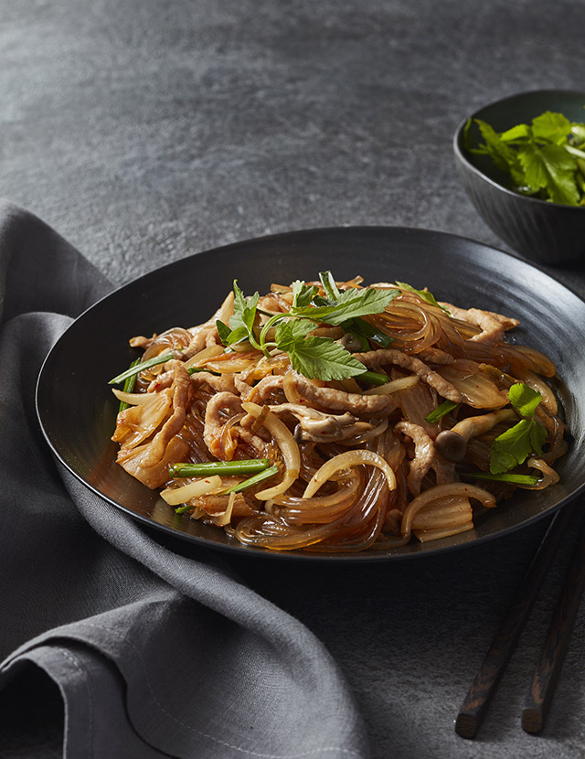

Japchae

Description
Japchae is a very popular Korean dish. It is the number one sought after dish particularly during the Korean festive holidays (e.g. New Year’s day and Harvest festival) but it is also enjoyed on any other common day as well.
Ingredients
Japchae ingredients
- Glass noodles 250g
- Spinach 150g
- Pork meat 2/3 cup (110g)
- Dry wood ear mushroom 1/2 cup (3g)
- Onions 2 cups (180g)
- Spring onions 2/3 cup (40g)
- Carrots 2/3 cup (40g)
Sauce ingredients
- Soy sauce 4 tbsp (30g)
- Brown sugar 2 tbsp (22g)
- Sesame oil 4 tbsp (25g)
- Minced garlic 1/2 tbsp (15g)
- Cooking oil 4 tbsp (25g)
- Salt 1/3 tbsp (2g)
- Sesame seeds 1/2 tbsp (4g)
- MSG 1/3 tbsp (2g)
- Pepper 1g
- Caramel 1g
Steps
- Pre-soak the glass noodles in water for 30 minutes.
- Remove the spinach roots and separate each leaf.
- Thinly slice the onions vertically.
- Cut the carrot into thin slices and cut the green onions horizontally.
- Pre-soak the wood ear mushroom for 30 minutes and cut or tear into bite-sized pieces.
- Add 1 tbsp of cooking oil to the frying pan and stir-fry the chop up pork.
- Add 1 tbsp of cooking oil and stir-fry the onions with a pinch of pepper.
- Add 1/2 tbsp of cooking oil and stir-fry carrots with salt over medium heat.
- Add 1/2 tbsp of cooking oil and stir-fry wood ear mushroom over medium heat.
- Boil some salted water and parboil the spinach for about 12 seconds.
- Cook the pre-soaked glass noodles in boiling water and rinse with cold water.
- Remove the moisture from the glass noodles and cut with scissors.
- Add the stir-fried ingredients, spinach and minced garlic to glass noodles and mix well.
- Season to taste with sugar, soy sauce and salt and add some sesame oil, pepper, MSG and caramel.
- Plate up and sprinkle sesame seeds to finish.